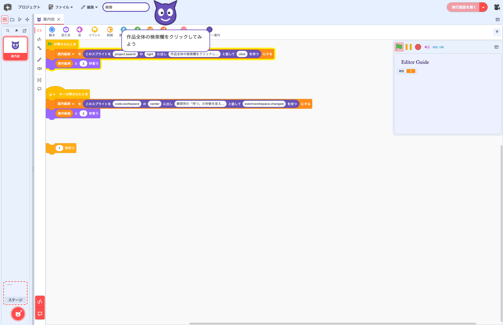

機能ガイド 14/14 · 2026年11月27日更新
スプライトでエディターの操作を案内する
マスコットをステージの外へ出し、エディターの操作場所を示して、実操作を待つ教材を作れます。
14.1 ガイド付き作品を開いて試す
組み込み拡張「エディター案内」は、作品からエディターの操作場所を示す機能です。ガイド付き作品を開くと、その作品が案内を呼び出したときに表示します。エディターを開いただけで、ツアーが自動的に始まる機能ではありません。
- 最小サンプルSB3を保存し、Plus Editorの「ファイル」→「SB3ファイルを開く…」から開きます。
- 実行画面が見えない場合は「実行画面の開き方」から「引出しで表示」を選びます。緑の旗を押すと、案内役がステージの外の「作品全体の検索」のそばに現れます。案内に従って検索欄をクリックすると、案内が終わります。
- ステージの余白をクリックして文字入力欄からフォーカスを外し、コード画面を表示したままGキーを押すと、コードの変更を待つ別の案内を試せます。練習用の「1秒待つ」の値を変えると終了します。
このサンプルには、案内待ちの結果を受け取る処理と、独立して進む「時計」があります。「エディター案内」のブロックを変更して、自分の教材の入口にできます。作品データ・オリジナルの案内役SVGも参照できます（サンプルの注記）。この組み込み拡張に対応するPlus Editorで使用してください。


14.2 座標の代わりに場所の名前を選ぶ
対象には論理名を使います。ピクセル座標やCSSセレクターを作品に埋め込む必要はありません。任意の場所の名前を作品側で新しく宣言できるわけではなく、EditorのGuideホストが登録した場所から選びます。
| 名前 | 指す場所・条件 |
|---|---|
project.search | 作品全体の検索欄。別のタブを開いても残るため、検索・保存・Gitを併用する教材の入口に向きます。 |
code.workspace | 現在のコード領域。コードを表示して使います。変更待ちに event:workspace.changed を使えます。 |
editor.greenFlag | 緑の旗。実行画面などで旗が表示されている必要があります。旗を押すと作品を再開始するため、継続中の教材の確認ボタンには向きません。 |
sprite.list | 登録されたスプライト一覧。配置によって対象を取得できない場合があります。「案内できる」で確認してから使います。 |
対象が非表示・未提供・複数候補の場合は案内できません。「[対象] を案内できる」で分岐し、案内できないときはステージ内の説明やスキップを用意します。パネルを別OSウィンドウに移した場合も、同じ文書内にある対象だけが案内の範囲です。
14.3 案内を表示し、操作を待つ
- 「[対象] を案内する [メッセージ]」：場所を示す説明を表示します。
- 「[対象] を [メッセージ] と案内して [操作] を待つ」：説明を表示し、実操作の結果を値として返します。
- 「このスプライトを [対象] の [側] に出し [メッセージ] と話して [操作] を待つ」：呼び出したスプライト自身を、対象の左・右・上・下・中央に表示します。ステージでは使えません。
- 「エディター案内を閉じる」「案内の結果」「案内の結果の理由」：表示の終了と、終了状態の確認に使います。
待つ操作は、対象への実クリックを待つ click、またはコードの変更を待つ event:workspace.changed など、対象が提供するイベントです。説明を読んだことや案内を閉じたことを、実操作の完了とは扱いません。
たとえば「案内結果」を、対象 code.workspace、側「右」、メッセージ「待つ秒数を変えてみよう」、操作 event:workspace.changed のスプライト案内ブロックの値にします。その後、「案内結果」が completed なら次へ、それ以外なら再試行・スキップへ分岐します。コードが何か変わったことを検出するだけなので、特定の値への変更や正解まで保証したい場合は、作品側で別に判定します。
案内中のスプライトには、その時点のコスチューム・大きさ・向き・効果が反映されます。セリフはGuideブロックのメッセージです。通常の「と言う」ブロックの吹き出しや音声合成を自動で移す機能ではありません。ステージ側の表示は一時的に隠れ、案内が終わると現在の可視状態に従って戻ります。教材には専用の案内役を用意すると管理しやすくなります。

14.4 完了・中断・利用不可を分けて場面を進める
| 結果 | 教材側の扱い |
|---|---|
completed | 待っていた実操作が届きました。次の説明や課題へ進めます。 |
cancelled | 案内を閉じた、別の案内が置き換えたなど。完了扱いにせず、再試行やスキップを選べるようにします。 |
unavailable | 対象やスプライトが使えません。配置を案内し直すか、ステージ内の代替説明を出します。 |
timeout | 期限付きのホスト呼び出しが時間切れになりました。通常のScratch待機ブロックに暗黙の制限時間はありません。 |
1つのVMで同時に進める案内は1件です。二人の案内役がいる場合も、交互に呼び出します。紙芝居では、その場面の処理から案内を呼び、戻り値を受け取って次へ進めます。場面移動時には待機を管理し、案内を閉じてから次の案内を開始してください。
作品停止・作品の切り替え・呼び出し元スレッドの停止・対象の消滅などで表示と待機を解除します。途中から再開したい教材は、章・場面などの進行を作品側で管理します。Guide表示だけを保存して途中再開することはできません。
14.5 編集・デバッガー・保存・Gitと併用する
待つのはGuideを呼んだスレッドです。他のスクリプトは動作を続けます。スプライト案内の表示はマウス操作を通すため、その裏にあるエディターを操作し、別スプライトや紙芝居の他の部分を編集できます。ただし、実行中のコードや共有変数を変更した影響は通常のScratchと同じです。
作品全体のSB3保存、作品フォルダの保存、Gitの差分確認や保存済み変更のローカルコミットを妨げません。保存するのは作品データで、スレッドの実行位置や一時的な案内表示ではありません。Gitの権限・競合検査・実行中の操作制限も通常どおりです。
デバッガーのログ・変数確認を併用できます。VM全体の一時停止やステップ実行は案内役にも及びます。一時停止中に案内対象を操作しても、教材側の続きはVM再開後に進みます。停止前に説明を出しておくと迷いにくくなります。
タブの切り替えでコード領域などの案内対象が消えると、利用不可で終わる場合があります。併用する教材は検索欄など表示が続く場所を選ぶか、戻ってから再試行します。ブランチ切り替え、pull後の再読み込み、別作品の読み込みなど、作品を置き換える操作をまたいで同じ実行が続く保証はありません。